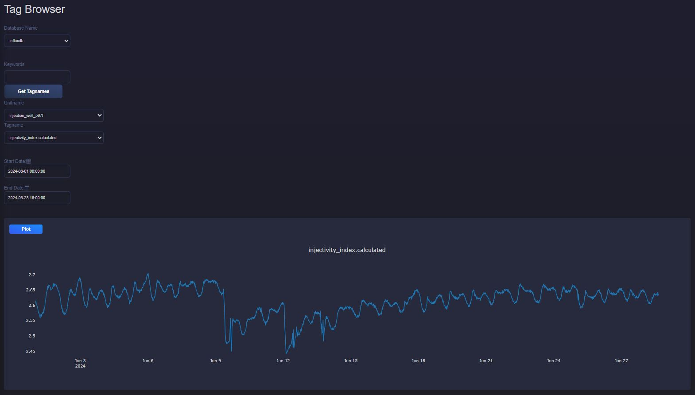
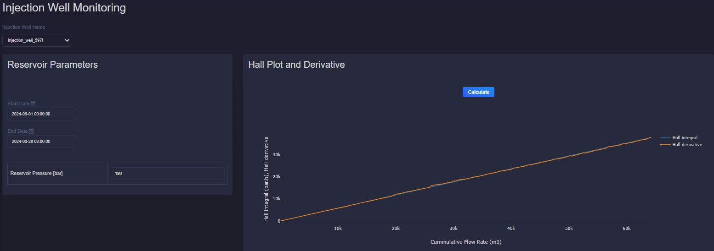
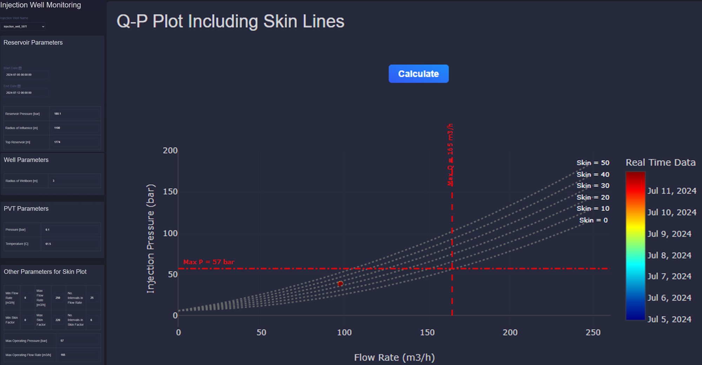

4.3. Injectivity Application
4.3.1. Description
This application provides monitoring and diagnostic tools for injection wells in geothermal reservoirs.
4.3.2. Injectivity Index
The injectivity index (\(II\)) quantifies how easily a reservoir accepts injected fluid. It is derived from Darcy’s law (\(Q = - \frac{kA}{\mu L} \Delta P\)):
where:
\(Q\) is the injection rate
\(P_{res}\) is the reservoir pressure
\(BHP\) is the bottomhole pressure
\(\Delta P\) is the pressure difference (reservoir pressure - bottomhole pressure)
Injectivity index can be plotted for a selected well and time range through the Tag Browser.
{kind=link}

4.3.3. Hall plot and derivative
The Hall integral is a standard injectivity diagnostic. It integrates pressure difference over time and plots it against cumulative flow.
The Hall integral (\(HI\)) is given by:
where:
\(\Delta P\) is the pressure difference (bottomhole pressure - reservoir pressure)
\(t\) is the time
The Hall derivative (\(D_{Hall}\)) can be computed numerically as:
where:
\(\Delta P\) is the pressure difference (bottomhole pressure - reservoir pressure)
\(t\) is the time
\(Q\) is the flow rate
The application allows users to choose time range and reservoir pressure for Hall analysis.
{kind=link}

When Hall and Hall-derivative trends are stable, the system generally indicates no major plugging or stimulation effect.
4.3.4. Skin factor plot
The skin-factor plot compares measured flow/pressure data to model-derived skin lines. For a given flow rate and skin value, injection pressure can be calculated. A positive skin factor usually indicates formation damage and may require treatment.
Friction loss is calculated with Darcy-Weisbach and a Swamee-Jain friction factor:
where:
\(Q\) is the injection rate
\(P_{inj}\) is the calculated pressure for a given flow rate and skin factor
\(H_{top res}\) is the top reservoir depth
\(\mu_{brine}\) is the viscosity of the brine
\(\rho_{brine}\) is the density of the brine
\(r_{res}\) is the radius of influence of the reservoir
\(r_{well}\) is the well radius
\(k\) is the reservoir permeability
\(h\) is the reservoir thickness
\(L\) is the well length
\(D\) is the well diameter
\(V\) is the velocity inside the well
\(f\) is the friction coefficient of the well
\(\varepsilon\) is the roughness of the well
\(Re\) is the Reynolds number
A Q-P plot with skin lines can be generated for any selected well and date range, using the specified well and reservoir parameters.
{kind=link}
